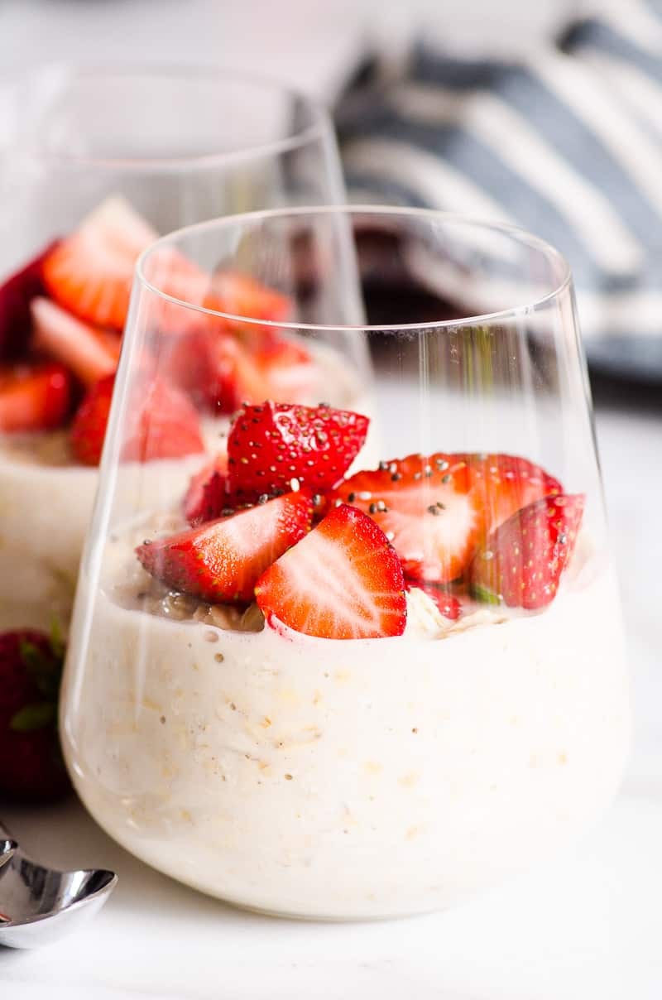

Overnight Oats

Description
Overnight Oats are easy to make, full of fiber and protein, and can be customized any way you like. Whether you warm them up or eat them cold, they are the perfect healthy breakfast solution to busy mornings!
Overnight oats are raw oats mixed with milk and soaked overnight. Hence, the name. Milk softens the oats eliminating the need to cook oatmeal on the stove. You can prep overnight oatmeal while making dinner, so easy!
Ingredients
- Oats
- Milk
- Maple syrup
- Vanilla extract
Instructions
- Prep: Add milk, maple syrup, vanilla and oats to any glass container with a lid. Stir well with a spoon.
- Refrigerate: Overnight is the best to avoid dry oatmeal and give time for milk to absorb into oats. However, quick oats can be enjoyed after 6 hours.
- Enjoy: In the morning, stir and if overnight cold oatmeal is too thick, adjust with milk. Also add more maple syrup if desired. Heat in microwave or enjoy cold.